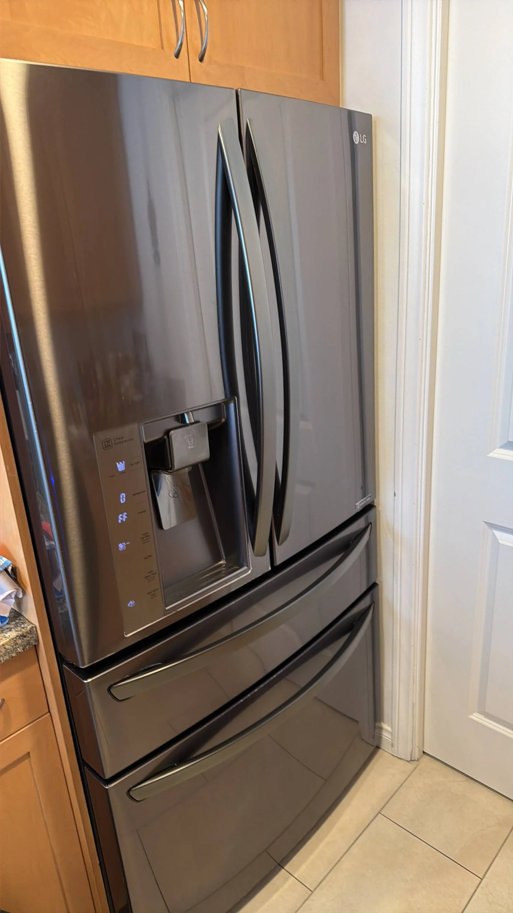

LG Refrigerator Has Frost Buildup in the Freezer — Possible Defrost Heater or Defrost Thermostat Problems
Excessive frost buildup in an LG refrigerator freezer is a clear indication that the automatic defrost system is not functioning as intended. A thin layer of frost on the evaporator coils is normal during regular operation, but thick ice covering the rear freezer panel, shelves, or air vents is not. As frost continues to accumulate, airflow becomes restricted, cooling performance gradually declines, and the refrigerator section may eventually become warm even though the freezer initially continues to maintain freezing temperatures. In many cases, the underlying cause is a failed defrost heater, a defective defrost thermostat, or another component within the No Frost system.
Modern LG refrigerators use a No Frost cooling system that automatically removes frost from the evaporator at regular intervals. During normal operation, moisture from the air freezes onto the evaporator coils. Several times each day, the electronic control board activates the defrost heater, which melts the accumulated frost. The melted water drains through a dedicated drain tube into a collection pan beneath the refrigerator, where it evaporates naturally. If any part of this cycle fails, frost continues building up until it interferes with normal airflow and cooling.
One of the most common causes is a faulty defrost heater. The heater is mounted directly beneath or around the evaporator coils and is responsible for melting accumulated frost during each defrost cycle. If the heating element burns out or develops an internal electrical fault, ice is no longer removed from the evaporator. Over time, the frost layer becomes thicker, preventing cold air from circulating properly throughout the refrigerator. Eventually, both the freezer and fresh food compartment may experience cooling problems despite the compressor continuing to run.

A defective defrost thermostat is another frequent source of frost buildup. Also known as a defrost bi-metal thermostat, this component monitors the temperature of the evaporator during the defrost cycle. It allows power to reach the heater only when the evaporator is cold enough to require defrosting and disconnects power once the frost has completely melted. If the thermostat fails in the open position, the heater never receives power, allowing frost to accumulate continuously. If it fails in the closed position, it may cause abnormal defrost operation or damage other components within the system.
In some cases, the electronic control board may also contribute to defrost problems. The control board determines when each defrost cycle begins and how long the heater remains energized. If the board fails to initiate the cycle or incorrectly interprets sensor readings, frost gradually accumulates despite the heater and thermostat remaining fully functional. Because the control board manages several refrigerator systems simultaneously, additional symptoms such as inconsistent cooling, unusual operating cycles, or error codes may also develop.
Blocked or frozen defrost drains can worsen the situation. During each defrost cycle, melted frost should flow freely through the drain opening beneath the evaporator. If the drain becomes clogged with ice, food particles, or debris, water cannot drain properly and may refreeze inside the freezer compartment. This creates additional ice accumulation beneath the evaporator or along the bottom of the freezer, making the problem appear even more severe.
Door seal problems should also be considered during diagnosis. A damaged, loose, or worn door gasket allows warm, humid air to enter the freezer every time the compressor is running. The additional moisture quickly freezes onto the evaporator coils, increasing the amount of frost the defrost system must remove. Although a leaking door seal is usually not the primary cause of heavy frost buildup, it can accelerate ice accumulation and place extra strain on the entire cooling system. Many homeowners temporarily solve the problem by unplugging the refrigerator and allowing it to thaw completely for 24 to 48 hours.Once all the accumulated ice melts, airflow returns and the refrigerator often resumes normal cooling.
However, if frost begins building up again within several days or weeks, the automatic defrost system has almost certainly failed. Manual defrosting removes the symptom but does not repair the defective heater, thermostat, or electronic control responsible for the recurring frost.
Several warning signs often accompany freezer frost buildup. Homeowners may notice thick ice on the rear freezer wall, reduced airflow from interior vents, food packages becoming covered with frost, longer compressor run times, unusual fan noises caused by blades striking ice, water leaking after temporary thawing, or a refrigerator compartment that gradually becomes warmer while the freezer still appears cold. Some LG models may also display diagnostic error codes related to the defrost system or temperature sensors.
Repairing defrost system problems requires electrical testing and partial disassembly of the freezer compartment. Professional technicians inspect the evaporator, measure continuity through the defrost heater, test the operation of the defrost thermostat, verify temperature sensor readings, inspect the drain system, and evaluate the electronic control board. Because multiple components work together during each defrost cycle, replacing a single part without confirming the actual failure can result in unnecessary repair costs and repeated service visits.
To reduce the likelihood of frost-related problems, avoid leaving the freezer door open longer than necessary, make sure food packages do not interfere with proper door closure, clean the door gasket regularly, maintain adequate airflow inside the freezer, and inspect the drain opening during routine maintenance. These simple practices help minimize excess moisture inside the appliance and reduce unnecessary stress on the No Frost system.
If your LG refrigerator has frost buildup in the freezer, the problem should be addressed as soon as possible. Excessive frost reduces cooling efficiency, forces the compressor to work harder, increases energy consumption, and can eventually lead to complete cooling failure. Professional diagnosis can accurately determine whether the issue involves the defrost heater, defrost thermostat, electronic control board, or another component within the automatic defrost system. Prompt repairs help restore normal airflow, maintain consistent temperatures, and keep your LG refrigerator operating efficiently for years to come.